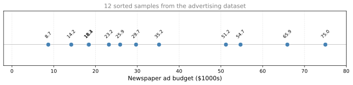
Quantiles and Box Plots
probability
You have learned several ways to describe data numerically: expected value, variance, skewness, and kurtosis. But for a data scientist, it is equally…
You have learned several ways to describe data numerically: expected value, variance, skewness, and kurtosis. But for a data scientist, it is equally important to be able to visualize data. This page introduces quantiles and box plots, two fundamental tools for understanding the shape of a dataset.
Quantiles
Starting with a Dataset
Consider an advertising dataset that records newspaper ad budgets (in thousands of dollars). For simplicity, take just twelve samples:
The data is already sorted in increasing order. From here, you might want to find the median, the value that splits the data in half.
Median as Quantile
Since there are twelve data points (an even number), you split them into two halves of six. The median is the average of the two middle values (the 6th and 7th):
\[ \text{Median} = \frac{25.9 + 29.7}{2} = 27.8 \]
This value is called the 50% quantile or the second quartile (\(Q_2\)). Half the data falls below it, half above.
First and Third Quartiles
What about the value that leaves one quarter of the data to the left and three quarters to the right? Take the lower half (first six values) and find its midpoint:
\[ Q_1 = \frac{18.3 + 18.4}{2} = 18.35 \]
This is the 25% quantile or first quartile (\(Q_1\)). It works like the median, but instead of cutting the data in half, it cuts off the bottom quarter.
Similarly, the 75% quantile or third quartile (\(Q_3\)) is the midpoint of the upper half:
\[ Q_3 = \frac{51.2 + 54.7}{2} = 52.95 \]
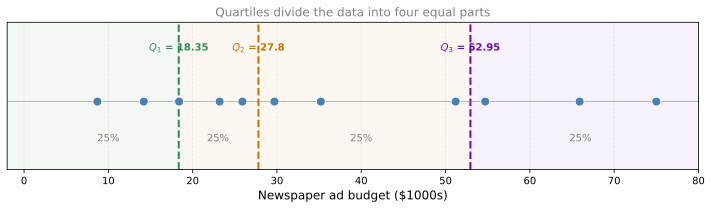
General Definition
The \(k\)% quantile is the value \(q(k/100)\) that leaves \(k\)% of the data to the left and \((100 - k)\)% to the right:
\[ P(X \leq q) = \frac{k}{100} \]
The three most common quantiles have special names:
| Quantile | Notation | Meaning |
|---|---|---|
| 25% quantile | \(Q_1\) (first quartile) | One quarter of data falls below |
| 50% quantile | \(Q_2\) (median) | Half of data falls below |
| 75% quantile | \(Q_3\) (third quartile) | Three quarters of data falls below |
You can compute a quantile for any percentage. For example, the 10% quantile is the value below which 10% of observations fall.
Quantiles from Continuous Distributions
When your data follows a continuous distribution with a probability density function (PDF), the \(k\)% quantile is the value \(q\) such that the area under the curve to the left of \(q\) equals \(k/100\):
\[ P(X \leq q) = \int_{-\infty}^{q} f(x)\, dx = \frac{k}{100} \]
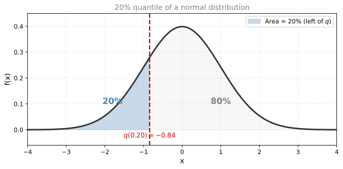
This connects what you know about discrete data (counting how many points fall below a value) to continuous distributions (computing areas under a curve).
Review Questions
1. You have 20 data points sorted in order. How would you find the median?
TipAnswer
Since 20 is even, the median is the average of the 10th and 11th values. This splits the data into two halves of 10 each.
1. What is the difference between the 25% quantile and the 75% quantile?
TipAnswer
The 25% quantile (\(Q_1\)) is the value below which 25% of the data falls. The 75% quantile (\(Q_3\)) is the value below which 75% of the data falls. The difference \(Q_3 - Q_1\) is called the interquartile range (IQR) and measures the spread of the middle 50% of data.
1. For a continuous distribution, what does the 90% quantile represent geometrically?
TipAnswer
It is the value \(q\) such that the area under the PDF to the left of \(q\) equals 0.90. In other words, 90% of the total probability mass lies below that point.
1. A dataset has \(Q_1 = 10\), \(Q_2 = 15\), and \(Q_3 = 30\). What can you say about the shape of this data?
TipAnswer
The distance from \(Q_2\) to \(Q_3\) (15) is much larger than the distance from \(Q_1\) to \(Q_2\) (5). This suggests the data is positively skewed (right-skewed), with more spread in the upper half than the lower half.
Box Plots
A box plot (also called a box-and-whiskers plot) is a standardized way of displaying a distribution based on five statistics: the minimum, \(Q_1\), the median (\(Q_2\)), \(Q_3\), and the maximum. It gives you a quick visual summary of center, spread, and skewness.
Building a Box Plot Step by Step
Using the same newspaper ad budget data, here are the ingredients:
| Statistic | Value |
|---|---|
| Minimum | 8.7 |
| \(Q_1\) | 18.35 |
| \(Q_2\) (median) | 27.8 |
| \(Q_3\) | 52.95 |
| Maximum | 75 |
| IQR (\(Q_3 - Q_1\)) | 34.6 |
The interquartile range (IQR) is \(Q_3 - Q_1 = 52.95 - 18.35 = 34.6\). This is the width of the box, and it contains the middle 50% of the data.
Here is how to construct the box plot:
- Draw the box from \(Q_1\) to \(Q_3\) (18.35 to 52.95).
- Draw the median line inside the box at \(Q_2 = 27.8\).
- Draw the whiskers. Extend lines from each end of the box outward. The whiskers reach at most \(1.5 \times \text{IQR}\) beyond the box edges:
- Lower whisker limit: \(Q_1 - 1.5 \times \text{IQR} = 18.35 - 51.9 = -33.55\)
- Upper whisker limit: \(Q_3 + 1.5 \times \text{IQR} = 52.95 + 51.9 = 104.85\)
- Cap the whiskers at the actual min and max of the data if they fall within those limits. In this case, the minimum (8.7) and maximum (75) are both within the whisker limits, so the whiskers simply end at those values.
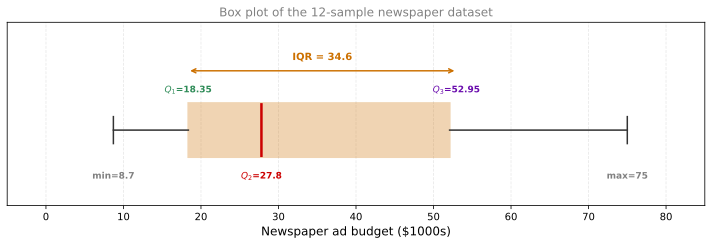
Reading a Box Plot
Just by looking at the box plot, you can immediately observe:
- Skewness: The distance from \(Q_2\) to \(Q_3\) (about 25) is much larger than \(Q_1\) to \(Q_2\) (about 9.5). This tells you the data is positively skewed (right-skewed).
- Spread: The IQR (box width) shows where the middle 50% lives. The whiskers show the full range.
- Outliers: Any data points beyond the whiskers are plotted as individual dots and considered outliers (unusually extreme values). In this 12-sample case, there are no outliers because all points fall within the whisker limits.
Outliers in Box Plots
The whisker rule (\(1.5 \times \text{IQR}\)) is a standard cutoff for identifying outliers. Any observation beyond the whiskers is flagged as an extreme point.
Using the full newspaper advertising dataset (200 observations), the statistics are:
| Statistic | Value |
|---|---|
| Minimum | 0.3 |
| \(Q_1\) | 12.75 |
| \(Q_2\) (median) | 25.75 |
| \(Q_3\) | 45.1 |
| IQR (\(Q_3 - Q_1\)) | 32.35 |
| Lower whisker limit (\(Q_1 - 1.5 \times \text{IQR}\)) | \(-35.78\) (below min, so whisker stops at 0.3) |
| Upper whisker limit (\(Q_3 + 1.5 \times \text{IQR}\)) | 93.625 |
| Maximum | 114.0 |
The lower whisker reaches the minimum (0.3) because no data points fall below \(Q_1 - 1.5 \times \text{IQR}\). The upper whisker ends at 89.4 (the largest data point within 93.625). Two data points exceed that limit (100.9 and 114.0) and appear as outlier dots.
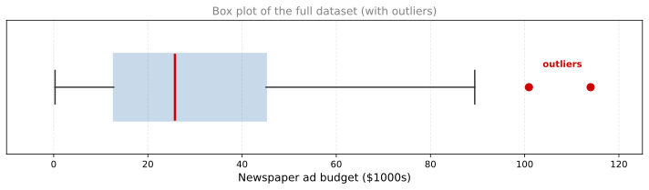
Review Questions
1. What five statistics does a box plot display?
TipAnswer
The minimum (or lower whisker), first quartile (\(Q_1\)), median (\(Q_2\)), third quartile (\(Q_3\)), and maximum (or upper whisker). Together these are called the five-number summary.
1. How do you determine the whisker length in a box plot?
TipAnswer
Each whisker extends at most \(1.5 \times \text{IQR}\) from the edge of the box. The lower whisker goes down to \(Q_1 - 1.5 \times \text{IQR}\) (or the minimum value if that is closer), and the upper whisker goes up to \(Q_3 + 1.5 \times \text{IQR}\) (or the maximum value if that is closer).
1. In our 12-sample dataset, \(Q_2 - Q_1 = 9.45\) and \(Q_3 - Q_2 = 25.15\). What does this tell you?
TipAnswer
The upper half of the box is much wider than the lower half. This means the data is positively skewed (right-skewed): there is more spread above the median than below it.
1. What does it mean when a data point appears as a dot beyond the whisker?
TipAnswer
It is an outlier, a value that is unusually far from the center of the distribution. Specifically, it lies more than \(1.5 \times \text{IQR}\) beyond \(Q_1\) or \(Q_3\). These points deserve special attention because they may represent errors, rare events, or genuinely extreme observations.
Kernel Density Estimation
The samples in the advertising dataset seem to come from a continuous random variable. You know that continuous distributions are described by a probability density function (PDF). The question is: can we estimate what the PDF looks like from the data?
Histograms as a Starting Point
The most familiar approach is a histogram. A histogram satisfies the conditions of a density function (it is positive and the area under it equals 1), but it is not a great approximation for a PDF because:
- PDFs are usually smooth functions, but histograms are jagged with sharp discontinuities.
- The bar edges come from the binning technique, not from the data itself. The underlying distribution may be perfectly smooth, but the histogram makes it look like it has many peaks.
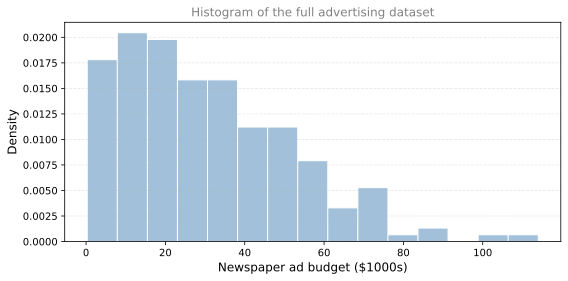
Is there a way to get a smooth approximation of the PDF from this data?
Idea Behind KDE
The method is called kernel density estimation (KDE). The idea is simple:
- Place a small Gaussian curve (called a kernel) on top of each data point.
- Sum all the Gaussians into a single curve.
- Multiply by \(\frac{1}{n}\) (divide by the number of points) so the total area equals 1.
Since each individual Gaussian has area 1, their sum has area \(n\). Dividing by \(n\) brings the area back to 1, giving a valid density function. The result is high where many data points cluster and low where data is sparse.
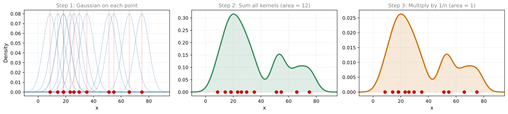
Bandwidth (\(\sigma\))
The bandwidth (the \(\sigma\) of each Gaussian kernel) controls how far each data point spreads its influence:
- Small \(\sigma\): thin kernels, bumpy result (overfitting to individual points)
- Large \(\sigma\): wide kernels, very smooth result (may over-smooth and hide real features)
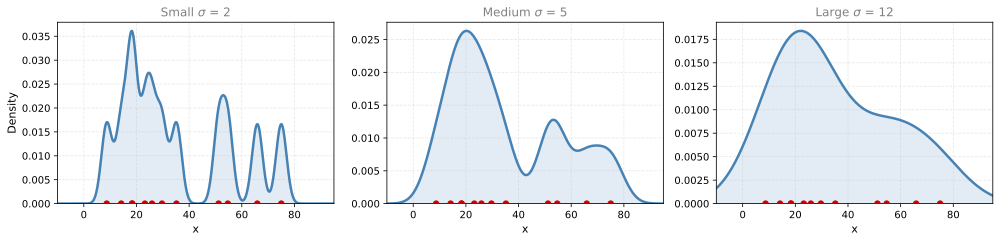
KDE with More Data
With only 12 data points, the KDE looks rough regardless of bandwidth. But with the full 200-point dataset, KDE produces a smooth, informative density estimate:
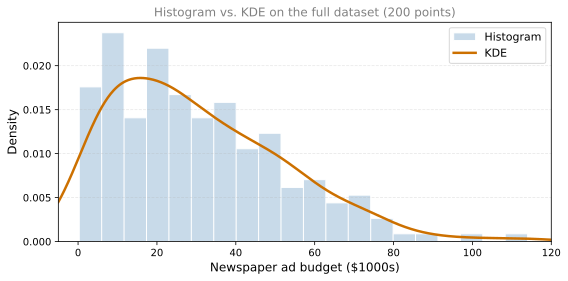
KDE gives you a smooth approximation of the PDF based purely on your data. It is the foundation for violin plots, which you will see next.
Review Questions
1. What are two problems with using a histogram as an estimate of the PDF?
TipAnswer
First, histograms are not smooth (they have sharp jumps between bars), while the true PDF is usually a smooth curve. Second, the bar edges depend on how you choose the bin boundaries, not on the data itself, so the same data can produce different-looking histograms depending on the binning.
1. In KDE, what is the “kernel” and what role does it play?
TipAnswer
The kernel is a small probability density function (typically a Gaussian) placed on top of each data point. It spreads the influence of each observation to its neighborhood, creating high density where points cluster and low density where points are sparse.
1. What happens to the KDE if you choose a very small bandwidth?
TipAnswer
Each kernel is very narrow, so the resulting estimate has a sharp spike at each data point. The curve becomes bumpy and noisy, overfitting to the individual observations rather than revealing the overall shape of the distribution.
1. Why does the KDE have total area equal to 1?
TipAnswer
Each individual Gaussian kernel has area 1. The KDE is the average of \(n\) such kernels (sum divided by \(n\)). The average of functions that each have area 1 also has area 1. This guarantees the KDE is a valid density function.
Violin Plots
A violin plot combines the information from a box plot and a KDE into a single visualization. It shows you:
- The KDE (density shape) mirrored on both sides, giving the “violin” silhouette.
- The box plot elements (median, quartiles, whiskers) drawn inside.
This gives you the best of both worlds: the precise summary statistics from the box plot and the full distributional shape from the KDE.
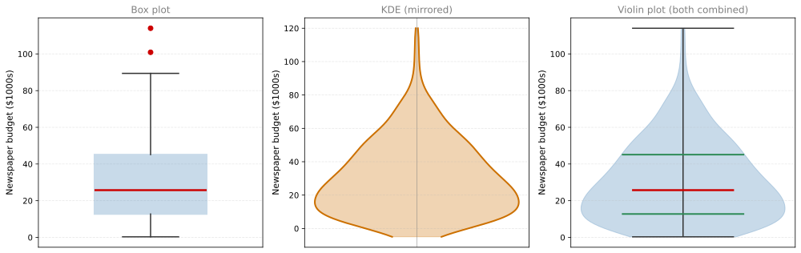
The violin shape immediately reveals features that a box plot alone cannot show: whether the distribution is bimodal, where the bulk of data concentrates, and the overall shape of the tails. Together with the quartile markers, it gives a complete picture at a glance.
QQ Plots
Many statistical models (linear regression, logistic regression, Gaussian Naive Bayes) assume that the data follows a normal distribution. How can you check whether this assumption is reasonable?
A histogram gives a rough sense, but it is hard to tell from a histogram alone whether data is “close enough” to Gaussian. A more precise tool is the quantile-quantile plot (QQ plot).
How QQ Plots Work
- Standardize your data (subtract the mean, divide by the standard deviation).
- Compute the quantiles of your standardized data (sort the values).
- Compute the same quantiles from a standard normal distribution (the “theoretical” quantiles).
- Plot theoretical quantiles on the x-axis and sample quantiles on the y-axis.
If your data is truly normally distributed, the sample quantiles will match the theoretical quantiles, and the points will fall along a straight diagonal line.
Example: Newspaper Budget (Not Gaussian)
The newspaper ad budget column is right-skewed. Its QQ plot shows clear deviation from the diagonal:
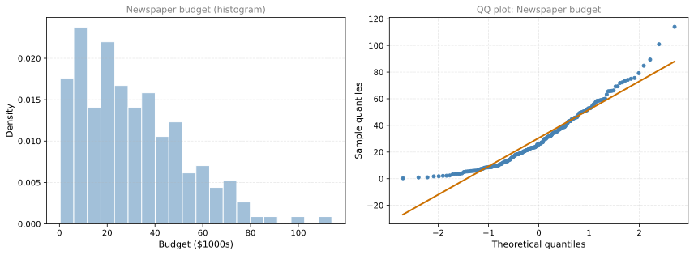
The points curve away from the orange line, especially in the tails. The concentration of points on the left and the upward curve on the right are signs of positive skewness. This data is clearly not Gaussian.
Example: Sales (Approximately Gaussian)
The Sales column from the same dataset looks more bell-shaped:
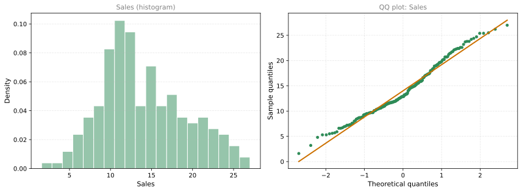
The points align closely with the diagonal line, suggesting that the Sales data is approximately normally distributed.
Reading a QQ Plot
| Pattern | Interpretation |
|---|---|
| Points follow the diagonal line | Data is approximately Gaussian |
| Points curve above the line on the right | Heavier right tail than normal (positive skew) |
| Points curve below the line on the left | Heavier left tail than normal (negative skew) |
| S-shaped curve | Heavier tails on both sides (high kurtosis) |
Review Questions
1. What does a violin plot show that a box plot alone does not?
TipAnswer
A violin plot shows the full shape of the distribution (the KDE density curve), not just the five-number summary. You can see whether the data is bimodal, where most values concentrate, and the exact shape of the tails.
1. Why is checking for normality important in data science?
TipAnswer
Many models (linear regression, logistic regression, Gaussian Naive Bayes) and statistical tests assume the data follows a Gaussian distribution. If this assumption is violated, the model predictions or test results may be unreliable.
1. In a QQ plot, what does it mean when the points fall along the diagonal line?
TipAnswer
It means the sample quantiles match the theoretical normal quantiles, which suggests the data is approximately normally distributed.
1. The QQ plot for the newspaper budget curves upward on the right side. What does this indicate?
TipAnswer
The upper quantiles of the data are larger than what a normal distribution would predict. This indicates positive skewness: the right tail is heavier (stretches further) than a Gaussian tail would. The data has more extreme high values than a normal distribution.
1. Consider the following box plot for test scores of two classes, A and B. Class A has a box from about 68 to 90 with median around 75. Class B has a box from about 78 to 92 with median around 85, and one outlier below the whisker. Which statements are true?
- Class B’s IQR is larger than Class A’s IQR
- Class A’s median score is higher than Class B’s median score
- Class B’s median score is higher than Class A’s median score
- Class A’s IQR is larger than Class B’s IQR
TipAnswer
c and d. Class B’s median (~85) is higher than Class A’s median (~75), so c is true. Class A’s box (rectangle) is taller than Class B’s box, meaning Class A’s IQR is larger, so d is also true.
1. Consider the following QQ plot where points closely follow the diagonal line with only minor deviations at the extreme tails. Which statement is true?
- The data looks normally distributed
- The data has a higher variance than a normal distribution
- The data has a lower variance than a normal distribution
- The data is not normally distributed
TipAnswer
a. The data looks normally distributed. When the points in a QQ plot closely follow the diagonal reference line, it means the sample quantiles match the theoretical normal quantiles. Minor deviations at the very extremes are common even in truly normal data due to sampling variability.
2. The box plot below shows the distribution of salaries for employees in three different company departments. Department 1 has a box from ~25k to ~35k with median ~30k and an outlier below ~20k. Department 2 has a box from ~30k to ~55k with median ~40k and an outlier near ~60k. Department 3 has a box from ~40k to ~60k with median ~50k, whiskers from ~30k to ~75k, and outliers at ~20k and ~88k. Which of the following statements are true? Select all that apply.
- The median salary of department 2 is higher than the median salary of department 1.
- The IQR of department 3 is smaller than department 1.
- There are no outliers in department 2.
- The range of salaries in department 3 is larger than the range of salaries in department 2.
TipAnswer
a and d. The median of department 2 (~40k) is clearly higher than department 1 (~30k). The range of department 3 (from ~20k outlier to ~88k outlier, about 68k) is larger than department 2 (from ~25k to ~60k, about 35k). Option b is false because department 3 has a larger IQR (~20k) than department 1 (~10k). Option c is false because department 2 has an outlier at ~60k.
3. A violin plot and box plot show the same dataset. The violin plot reveals two distinct bulges (one around -1 to 0 and another around 0 to 2). The box plot shows a median at approximately 0, with outlier dots above ~4 and below ~-3. Which of the following statements are true? Select all that apply.
- Outliers are visible in the box plot but not in the violin plot.
- The dataset has a positive skewness.
- The dataset has a bimodal distribution.
- The median of the dataset is approximately 0.
- The interquartile range (IQR) is smaller in the violin plot compared to the box plot.
TipAnswer
a, c, and d. The box plot explicitly marks outliers as dots beyond the whiskers, while the violin plot incorporates them into the density curve without marking them separately. The violin plot shows two distinct bulges, indicating a bimodal distribution. The orange line in the box plot (median) is at approximately 0. Option b is questionable since the distribution appears roughly symmetric. Option e is false because both plots represent the same data and thus the same IQR.